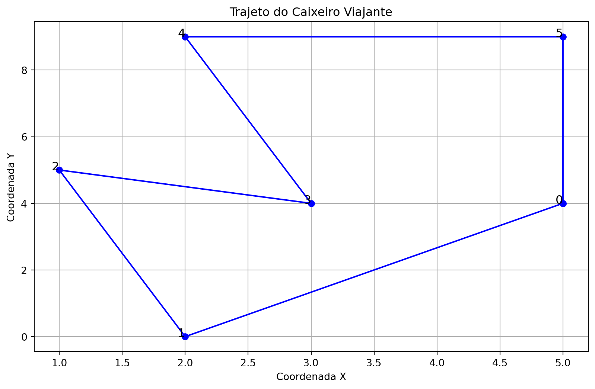

Algoritmo Genético: O problema do caixeiro viajante (PCV).
Author
Augusto, Maria Eduarda, Tammy e Yoon
Published
November 15, 2024
1 Introdução
Os Algoritmos Genéticos (AGs) são técnicas de otimização inspiradas nos princípios da seleção natural e evolução das espécies. Eles são especialmente úteis para resolver problemas complexos onde métodos tradicionais de busca e otimização podem falhar. Esses algoritmos têm se destacado em áreas como otimização de processos, inteligência artificial, e planejamento logístico.
Nesse estudo de caso será tratado um exemplo clássico de aplicação dos AGs é o Problema do Caixeiro Viajante (PCV), que consiste em determinar a rota mais curta para um caixeiro viajante que precisa visitar uma lista de cidades exatamente uma vez, retornando à cidade de origem.
2 Conceito de Algoritmos Genéticos
Essa técnica de otimização é baseada nos princípios da evolução natural descrita por Charles Darwin, assim, os AGs buscam encontrar soluções aproximadas para problemas complexos, simulando a evolução de uma população de soluções candidatas ao longo de várias gerações. Dessa forma, os fundamentos de uma AG são:
População: Representa o conjunto de soluções candidatas para o problema. Cada solução, chamada de indivíduo, é uma possível resposta ao problema em questão.
Seleção: Processo de escolha dos indivíduos mais aptos para formar a próxima geração. Indivíduos com melhor desempenho têm maior probabilidade de serem selecionados.
Cruzamento (Crossover): Combina duas soluções (pais) para gerar novas soluções (filhos), misturando características das soluções originais.
Mutação: Introduz pequenas alterações aleatórias nas soluções para garantir a diversidade da população e evitar convergência prematura a soluções locais.
Aptidão (Fitness Function): Mede a qualidade de cada solução. É usada para avaliar quão bem cada indivíduo resolve o problema em questão.
Para o funcionamento desse algoritmo, ele segue o seguinte ciclo de etapas, que se repetem até que uma solução satisfatória seja encontrada:
Inicialização: Uma população inicial é gerada de forma aleatória ou baseada em heurísticas.
Avaliação: A aptidão de cada indivíduo na população é calculada usando a função de aptidão.
Seleção: Indivíduos são selecionados com base em sua aptidão para formar a base da próxima geração.
Cruzamento: Pares de indivíduos selecionados são combinados para gerar novos indivíduos.
Mutação: Pequenas alterações aleatórias são aplicadas em alguns indivíduos para manter a diversidade genética da população.
Repetição: Os passos 2 a 5 são repetidos até que uma condição de parada seja atendida, como alcançar um número máximo de gerações ou encontrar uma solução satisfatória.
Com essas etapas, os AGs iteram até que uma solução ótima ou próxima do ótimo seja encontrada, oferecendo um método poderoso para resolver problemas complexos.
3 Objetivo
Este estudo de caso tem como objetivo explorar o uso de Algoritmos Genéticos para resolver o Problema do Caixeiro Viajante. O PCV possui aplicações práticas em diversas áreas, como:
Logística: Na gestão de frotas de veículos, onde a otimização de rotas pode reduzir custos operacionais e tempo de entrega.
Eletrônica: Em processos de soldagem de componentes em placas de circuito, onde é necessário determinar o caminho mais eficiente para que o equipamento percorra todos os pontos de solda, aumentando a produtividade da linha de produção.
Com isso, pretende-se demonstrar a eficácia dos AGs em otimizar soluções para problemas que exigem análise combinatória complexa.
4 Implementação
4.1 Inicialização
Para efeito de simplificação serão consideradas distâncias lineares calculadas em um sistema de coordenadas cartesianas, em que cada cidade i é representada por suas coordenadas(xi,yi). A distância entre duas cidades i e j é dada pela fórmula da distância Euclidiana entre o P1(xi, y1) e P2(xj, yj):
\[
d = \sqrt{(x_2 - x_1)^2 + (y_2 - y_1)^2}
\]
4.2 Avaliação
A maior dificuldade do problema do Caixeiro Viajante é o número muito grande de possíveis rotas para n cidades, sendo representado por:
\[
\frac{(n-1)!}{2}.
\]
Como resultado, a avaliação de cada solução candidata é essencial para determinar a qualidade, sendo possível ver na seguinte tabela que mostra o número de rotas possíveis em função do número de cidades, permitindo que se tenha uma ideia da complexidade crescente conforme o número de cidades aumenta.
import pandas as pdimport math# Função para calcular o número de rotasdef calcular_rotas(n):return math.factorial(n-1) //2# Dados da tabelanumeros_cidades =list(range(3, 17))numeros_rotas = [calcular_rotas(n) for n in numeros_cidades]# Criar DataFramedf = pd.DataFrame({"Número de cidades": numeros_cidades,"Número de rotas": numeros_rotas})# Exibir a tabelaprint(df)
Número de cidades Número de rotas
0 3 1
1 4 3
2 5 12
3 6 60
4 7 360
5 8 2520
6 9 20160
7 10 181440
8 11 1814400
9 12 19958400
10 13 239500800
11 14 3113510400
12 15 43589145600
13 16 653837184000
4.3 Seleção
As soluções (ou cromossomos) representam a ordem em que as cidades devem ser visitadas, sendo chamadas de “representação do caminho”. Para n cidades, uma solução é uma permutação dos números 0, 1, 2, …, n, em que 0 representa a cidade de origem. A seleção, nesse caso, envolve escolher quais dessas soluções serão mais aptas para gerar novas gerações de possíveis soluções.
4.3.1 Exemplo de representação de solução
Uma possível solução pode ser representada pela sequência [0, 1, 2, 3, 4, 5], indicando que o caixeiro viajante começa na cidade 0, segue para a cidade 1, depois para a cidade 3, e assim por diante, até chegar à cidade 8, antes de retornar à cidade de origem (cidade 0). Uma representação visual desse trajeto seria:
import matplotlib.pyplot as plt# Coordenadas das cidades (exemplo)cidades = {0: (5, 4),1: (2, 0),2: (1, 5),3: (3, 4),4: (2, 9),5: (5, 9)}# Sequência do trajetotrajeto = [0, 1, 2, 3, 4, 5, 0]# Extrair coordenadas do trajetox = [cidades[i][0] for i in trajeto]y = [cidades[i][1] for i in trajeto]# Criar o gráficoplt.figure(figsize=(10, 6))plt.plot(x, y, marker='o', linestyle='-', color='b')# Adicionar rótulos das cidadesfor i in cidades: plt.text(cidades[i][0], cidades[i][1], str(i), fontsize=12, ha='right')# Adicionar títulos e rótulosplt.title('Trajeto do Caixeiro Viajante')plt.xlabel('Coordenada X')plt.ylabel('Coordenada Y')plt.grid(True)# Exibir o gráficoplt.show()

4.4 Cruzamento
O cruzamento envolve combinar duas soluções (pais) para gerar uma nova solução (filho), misturando as características dos pais. Aqui, o objetivo é gerar novas rotas que, potencialmente, tenham um custo menor.
4.5 Mutação
A mutação aplica pequenas alterações aleatórias nas soluções para garantir diversidade e prevenir a convergência prematura. Isso pode envolver operações como troca de posições de cidades, inversão da ordem de cidades em uma solução, ou inserção e deslocamento de cidades.
4.6 Repetição
O ciclo de avaliação, seleção, cruzamento e mutação é repetido por várias gerações até que a condição de parada seja atendida, como alcançar um número máximo de gerações ou uma solução com custo mínimo (ou satisfatório). A busca é realizada até que se encontre uma solução ótima ou próxima do ótimo.
Nesse caso foi criado a função de custo a partir da soma das distâncias de cada trajeto para solucionar o problema, visto que o objetivo é encontrar a rota mais curta possível. Dessa forma, pode-se concluir que quanto menor o custo, maior a qualidade da solução.
import itertoolsimport math# Função para calcular a distância Euclidiana entre duas cidadesdef calcular_distancia(cidade1, cidade2): x1, y1 = cidade1 x2, y2 = cidade2return math.sqrt((x2 - x1)**2+ (y2 - y1)**2)# Função para calcular o custo total de uma rotadef calcular_custo_rota(rota, cidades): custo =0for i inrange(len(rota) -1): custo += calcular_distancia(cidades[rota[i]], cidades[rota[i +1]])# Retorna à cidade inicial custo += calcular_distancia(cidades[rota[-1]], cidades[rota[0]])return custo# Função para encontrar o melhor caminhodef encontrar_melhor_caminho(cidades): melhor_rota =None menor_custo =float('inf')# Gerar todas as permutações das cidades rotas_possiveis = itertools.permutations(cidades.keys())for rota in rotas_possiveis: custo = calcular_custo_rota(rota, cidades)if custo < menor_custo: melhor_rota = rota menor_custo = custoreturn melhor_rota, menor_custo# Coordenadas das cidadescidades = {0: (5, 4),1: (2, 0),2: (1, 5),3: (3, 4),4: (2, 9),5: (5, 9)}# Encontrar o melhor caminhomelhor_rota, menor_custo = encontrar_melhor_caminho(cidades)print("Melhor Rota:", melhor_rota)print("Custo da Rota:", menor_custo)
Melhor Rota: (0, 3, 1, 2, 4, 5)
Custo da Rota: 23.345230764828106
5 Conclusão
Este estudo de caso demonstrou a aplicação dos Algoritmos Genéticos na resolução do Problema do Caixeiro Viajante, destacando sua capacidade de explorar grandes espaços de soluções e encontrar rotas eficientes. Através da representação das soluções e dos operadores genéticos, foi possível gerar soluções aproximadas, minimizando o custo das rotas. Embora não garantam a solução ótima global, os AGs mostram-se eficazes em problemas complexos, especialmente quando combinados com técnicas híbridas para melhorar a precisão da busca.
6 Referências
MALAQUIAS, Nélia Gomes Lessa. Algoritmos genéticos e suas aplicações no problema do caixeiro viajante. 2013. 108 f. Dissertação (Mestrado em Ciência da Computação) — Universidade Federal de Uberlândia, Uberlândia, 2013. Disponível em: https://repositorio.ufu.br/bitstream/123456789/14632/1/NGLMalaquiasDISPRT.pdf. Acesso em: 15 nov. 2024.
LINDHARDT, L. Aplicação de Algoritmos Genéticos no Problema do Caixeiro Viajante. Rio de Janeiro: Universidade Federal do Rio de Janeiro, 2010. Dissertação de Mestrado. Acesso em: 15 nov. 2024.
ZAVADSKY, D. A.; MAZO, J. E.; FERREIRA, C. S. Problema do Caixeiro Viajante: Uma Abordagem com Algoritmos Genéticos e Simulação Computacional. São Carlos: Editora UFSCAR, 2018. Acesso em: 15 nov. 2024.